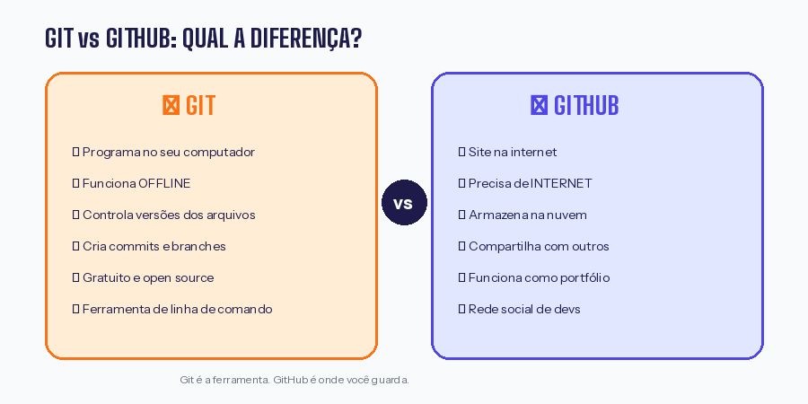
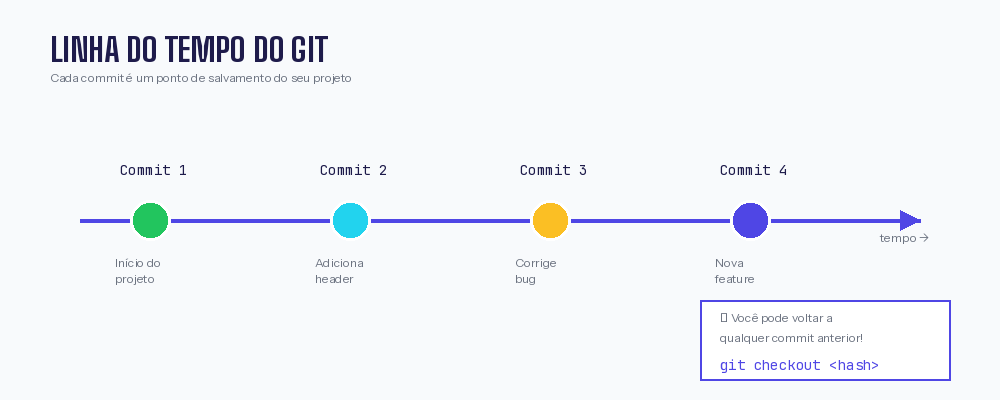

Semana 01 — Git e GitHub: Primeiros Passos¶
Informações da Aula
Disciplina: Ferramentas WEB e UX / Sistemas Operacionais
Data: Fevereiro de 2026
Professor: Ícaro
Tema: Introdução ao Git e GitHub
🎯 O que você vai aprender¶
Nesta aula, demos os primeiros passos no mundo do controle de versão. Ao final, você será capaz de:
- ✅ Entender o que é Git e por que ele é essencial
- ✅ Criar uma conta no GitHub
- ✅ Instalar e configurar o Git
- ✅ Conectar o VS Code ao GitHub
- ✅ Fazer seus primeiros commits
- ✅ Criar e entender branches
🤔 O que é Git? E GitHub?¶
Antes de começar, vamos entender a diferença:

| Git | GitHub |
|---|---|
| É um programa instalado no seu computador | É um site na internet |
| Controla as versões dos seus arquivos | Armazena seus projetos na nuvem |
| Funciona offline | Precisa de internet |
| É a ferramenta | É o serviço de hospedagem |
Analogia simples
Pense assim:
- Git = O programa Word no seu PC
- GitHub = O Google Drive onde você salva seus documentos
Você usa o Git para controlar seu código, e o GitHub para guardar e compartilhar na nuvem.
🎬 Por que usar controle de versão?¶
Você já passou por isso?
📁 Meu Projeto
├── trabalho.doc
├── trabalho-final.doc
├── trabalho-final-v2.doc
├── trabalho-final-v2-REVISADO.doc
├── trabalho-final-v2-REVISADO-AGORA-VAI.doc
└── trabalho-final-v2-REVISADO-AGORA-VAI-FINAL-MESMO.doc
😅 Com o Git, você teria apenas:
Benefícios do Git:¶
- Histórico completo — Nunca perde nada, pode voltar a qualquer versão
- Trabalho em equipe — Várias pessoas editando o mesmo projeto
- Backup automático — Seu código está seguro no GitHub
- Portfólio profissional — Empresas olham seu GitHub antes de contratar
🌐 GitHub como Rede Social e Currículo¶
O GitHub não é só para guardar código. Ele funciona como:
📋 Currículo de Desenvolvedor¶
- Mostra todos os seus projetos públicos
- Exibe seu histórico de contribuições (os quadradinhos verdes)
- Empresas avaliam candidatos pelo GitHub
- Você pode fixar seus melhores projetos no perfil
🤝 Rede Social de Desenvolvedores¶
- Seguir outros programadores
- Dar ⭐ (estrelas) em projetos que você gosta
- Contribuir com projetos de outras pessoas
- Participar de discussões
Dica importante
Mantenha seu GitHub ativo! Mesmo projetos pequenos da faculdade contam. Recrutadores olham a consistência (quadradinhos verdes frequentes) mais do que projetos gigantes.
🖥️ Instalação do Git¶
No Windows¶
- Acesse: git-scm.com/downloads
- Clique em "Download for Windows"
- Execute o instalador
- Importante: Nas opções, mantenha tudo padrão, mas em "Default editor" escolha Visual Studio Code
- Finalize a instalação
No Linux (Ubuntu/Mint)¶
Abra o terminal e execute:
Verificar se instalou¶
Deve aparecer algo como: git version 2.43.0
⚙️ Configuração Inicial do Git¶
Após instalar, você precisa dizer ao Git quem você é. Abra o terminal e execute:
# Configurar seu nome (use seu nome real)
git config --global user.name "Seu Nome Completo"
# Configurar seu email (use o MESMO email do GitHub)
git config --global user.email "seu.email@exemplo.com"
# Configurar o VS Code como editor padrão
git config --global core.editor "code --wait"
# Configurar o nome padrão da branch principal
git config --global init.defaultBranch main
Verificar suas configurações¶
📝 Criando sua Conta no GitHub¶
- Acesse: github.com
- Clique em "Sign up"
- Preencha:
- Email: Use um email que você acessa sempre
- Password: Senha forte (guarde bem!)
- Username: Escolha com cuidado! Este será seu "nome artístico" como dev
- Complete a verificação
- Escolha o plano Free (é suficiente!)
Dica para o username
- ✅ Bom:
joaosilva,maria-dev,carlos123 - ❌ Evite:
xX_destroyer_Xx,gatinha2005,asdfgh
Lembre-se: recrutadores vão ver isso!
🔗 Conectando VS Code ao GitHub¶
Passo 1: Abra o VS Code¶
Passo 2: Instale a extensão do GitHub¶
- Clique no ícone de extensões (quadradinhos) na barra lateral
- Pesquise: "GitHub Pull Requests"
- Instale a extensão oficial da Microsoft
Passo 3: Faça login¶
- Clique no ícone de pessoa no canto inferior esquerdo
- Clique em "Sign in to GitHub"
- O navegador vai abrir, autorize o acesso
- Pronto! VS Code conectado ao GitHub
📊 Entendendo a Linha do Tempo do Git¶
Esta é a parte mais importante para entender o Git!

Imagine uma linha do tempo:¶
commit 1 commit 2 commit 3 commit 4
│ │ │ │
───────●────────────●────────────●────────────●────────▶ tempo
│ │ │ │
"Início" "Adiciona "Corrige "Versão
header" bug" final"
Cada bolinha (●) é um commit = um "ponto de salvamento" do seu projeto.
O que é um Commit?¶
Um commit é como uma foto do seu projeto naquele momento. Ele guarda:
- 📁 Todos os arquivos
- 📅 Data e hora
- 👤 Quem fez
- 💬 Uma mensagem explicando o que mudou
Exemplo de histórico
🌿 O que são Branches?¶
Branch significa "galho" em inglês. É como se você criasse uma linha do tempo alternativa para testar coisas sem afetar o projeto principal.

Visualização:¶
branch: feature-login
┌────●────●────┐
│ │
─────●────●────●─────┤ ├────●────────▶ main
│ │ │ │ │ │
commit commit commit│ merge commit
│ │
(você trabalha (junta tudo
separado) de volta)
Por que usar branches?¶
- Testar sem medo — Se der errado, é só apagar a branch
- Trabalho em equipe — Cada pessoa trabalha em sua branch
- Organização — Separa funcionalidades diferentes
Comandos básicos de branch¶
# Ver em qual branch você está
git branch
# Criar uma nova branch
git branch nome-da-branch
# Mudar para outra branch
git checkout nome-da-branch
# Criar E mudar para nova branch (atalho)
git checkout -b nome-da-branch
🔄 Fluxo de Trabalho: Os 3 Estágios¶
Entenda como seus arquivos "viajam" pelo Git:

- Working Directory — Seus arquivos normais no computador
- Staging Area — Arquivos marcados para o próximo commit (
git add) - Repository — Histórico de commits salvos (
git commit) - GitHub — Cópia na nuvem (
git push)
🚀 Seu Primeiro Repositório: Passo a Passo¶
Vamos criar seu primeiro projeto do zero!
Passo 1: Criar pasta do projeto¶
Passo 2: Inicializar o Git¶
Isso cria uma pasta oculta .git que guarda todo o histórico.
Passo 3: Criar um arquivo¶
# Criar arquivo README
echo "# Meu Primeiro Repositório" > README.md
echo "Estou aprendendo Git!" >> README.md
Passo 4: Verificar status¶
Vai mostrar que README.md está "Untracked" (não rastreado).
Passo 5: Adicionar arquivo ao stage¶
Passo 6: Fazer o commit¶
Passo 7: Criar repositório no GitHub¶
- Vá em github.com
- Clique no "+" → "New repository"
- Nome:
meu-primeiro-repo - NÃO marque "Add README"
- Clique em "Create repository"
Passo 8: Conectar e enviar¶
# Conectar ao GitHub
git remote add origin https://github.com/SEU_USUARIO/meu-primeiro-repo.git
# Enviar para o GitHub
git push -u origin main
🎉 Parabéns! Seu código está no GitHub!¶
📋 Resumo dos Comandos¶
| Comando | O que faz |
|---|---|
git init |
Inicia repositório na pasta |
git status |
Mostra situação dos arquivos |
git add . |
Adiciona todos ao stage |
git commit -m "msg" |
Salva com mensagem |
git push |
Envia para o GitHub |
git pull |
Baixa do GitHub |
git branch |
Lista branches |
git checkout -b nome |
Cria e muda de branch |
🎬 Vídeos Recomendados¶
Para fixar o conteúdo, assista estes vídeos:
| Vídeo | Canal | Duração | Link |
|---|---|---|---|
| Git e GitHub para Iniciantes | Rafaella Ballerini | 34 min | YouTube |
| Como usar Git na prática | Código Fonte TV | 25 min | YouTube |
| Git para NOOBS | Fábio Akita | 40 min | YouTube |
✅ Checklist da Aula¶
Antes de ir para a próxima aula, confirme que você:
- [ ] Entendi a diferença entre Git e GitHub
- [ ] Criei minha conta no GitHub
- [ ] Instalei o Git no meu computador
- [ ] Configurei nome e email no Git
- [ ] Conectei o VS Code ao GitHub
- [ ] Criei meu primeiro repositório
- [ ] Fiz meu primeiro commit
- [ ] Enviei para o GitHub com
git push - [ ] Entendi o conceito de branches
🆘 Problemas Comuns¶
"fatal: not a git repository"¶
Você não está numa pasta com Git iniciado. Execute git init primeiro.
"error: failed to push"¶
Tente git pull primeiro, depois git push novamente.
"Authentication failed"¶
Use um Personal Access Token em vez de senha. Veja o guia no material.
Dúvidas?
Não entendeu algo? Me procura no grupo da turma ou abre uma issue no repositório!